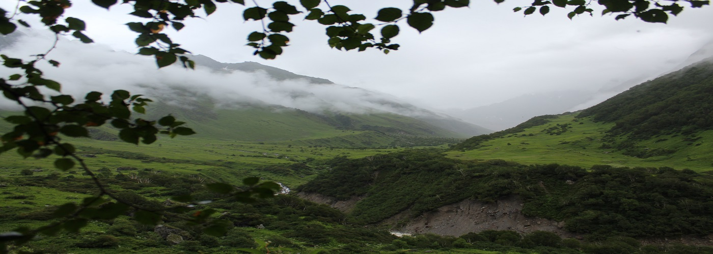
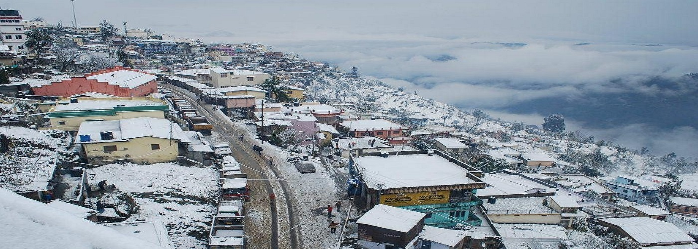

<!doctype html>
<html lang="en"></html>
  <head>
    <!-- Required meta tags -->
    <meta charset="utf-8">
    <meta name="viewport" content="width=device-width, initial-scale=1">

    <!-- Bootstrap CSS -->
    <link href="https://cdn.jsdelivr.net/npm/bootstrap@5.1.1/dist/css/bootstrap.min.css" rel="stylesheet" integrity="sha384-F3w7mX95PdgyTmZZMECAngseQB83DfGTowi0iMjiWaeVhAn4FJkqJByhZMI3AhiU" crossorigin="anonymous">

    <title>Uttarakhand Travels</title>
  </head>
  <body>

    <!-- Optional JavaScript; choose one of the two! -->

    <!-- Option 1: Bootstrap Bundle with Popper -->
    <script src="https://cdn.jsdelivr.net/npm/bootstrap@5.1.1/dist/js/bootstrap.bundle.min.js" integrity="sha384-/bQdsTh/da6pkI1MST/rWKFNjaCP5gBSY4sEBT38Q/9RBh9AH40zEOg7Hlq2THRZ" crossorigin="anonymous"></script>

    <!-- Option 2: Separate Popper and Bootstrap JS -->
    <!--
    <script src="https://cdn.jsdelivr.net/npm/@popperjs/core@2.9.3/dist/umd/popper.min.js" integrity="sha384-W8fXfP3gkOKtndU4JGtKDvXbO53Wy8SZCQHczT5FMiiqmQfUpWbYdTil/SxwZgAN" crossorigin="anonymous"></script>
    <script src="https://cdn.jsdelivr.net/npm/bootstrap@5.1.1/dist/js/bootstrap.min.js" integrity="sha384-skAcpIdS7UcVUC05LJ9Dxay8AXcDYfBJqt1CJ85S/CFujBsIzCIv+l9liuYLaMQ/" crossorigin="anonymous"></script>
    -->
  <nav class="navbar navbar-expand-lg navbar-dark bg-primary">
    <div class="container-fluid">
      <a class="navbar-brand" href="index.html">UkTravels</a>
      <button class="navbar-toggler" type="button" data-bs-toggle="collapse" data-bs-target="#navbarSupportedContent" aria-controls="navbarSupportedContent" aria-expanded="false" aria-label="Toggle navigation">
        <span class="navbar-toggler-icon"></span>
      </button>
      <div class="collapse navbar-collapse" id="navbarSupportedContent">
        <ul class="navbar-nav me-auto mb-2 mb-lg-0">
          <li class="nav-item">
            <a class="nav-link active" aria-current="page" href="index.html">Home</a>
          </li>
          <li class="nav-item">
            <a class="nav-link" href="#">About</a>
          </li>
          <li class="nav-item">
            <a class="nav-link" href="contact.html">Contact Us</a>
          </li>
        </ul>
        <form class="d-flex">
          <input class="form-control me-2" type="search" placeholder="Search" aria-label="Search">
          <button class="btn btn-outline-success" type="submit">Search</button>
        </form>
        </div>
      </div>
    </div>
  </nav>
  <div id="carouselExampleControls" class="carousel slide" data-bs-ride="carousel">
    <div class="carousel-inner">
      <div class="carousel-item active">
        
      </div>
      <div class="carousel-item">
        
      </div>
      <div class="carousel-item">
        
      </div>
    </div>
    <button class="carousel-control-prev" type="button" data-bs-target="#carouselExampleControls" data-bs-slide="prev">
      <span class="carousel-control-prev-icon" aria-hidden="true"></span>
      <span class="visually-hidden">Previous</span>
    </button>
    <button class="carousel-control-next" type="button" data-bs-target="#carouselExampleControls" data-bs-slide="next">
      <span class="carousel-control-next-icon" aria-hidden="true"></span>
      <span class="visually-hidden">Next</span>
    </button>
  </div><br>

  <h2>Uttarakhand</h2><br>

  <p>Uttarakhand's name is derived from the Sanskrit words uttara (उत्तर) meaning 'north', and khaṇḍa (खण्ड) meaning 'land', altogether simply meaning 'Northern Land'. The name finds mention in early Hindu scriptures as the combined region of "Kedarkhand" (present day Garhwal) and "Manaskhand" (present day Kumaon). Uttarakhand was also the ancient Puranic term for the central stretch of the Indian Himalayas.[33]

    However, the region was given the name Uttaranchal by the Bharatiya Janata Party led union government and Uttarakhand state government when they started a new round of state reorganisation in 1998. Chosen for its allegedly less separatist connotations, the name change generated enormous controversy among many activists for a separate state who saw it as a political act.[34] The name Uttarakhand remained popular in the region, even while Uttaranchal was promulgated through official usage.
    </p>

    <div class="card text-center">
      <div class="card-header">
        Featured
      </div>
      <div class="card-body">
        <h5 class="card-title">Uttarakhand</h5>
        <p class="card-text">Visit Uttarakhand</p>
        <!-- <a href="#" class="btn btn-primary">Go somewhere</a> -->
      </div>
      <!-- <div class="card-footer text-muted">
        2 days ago
      </div> -->
    </div>

</body>
</html>